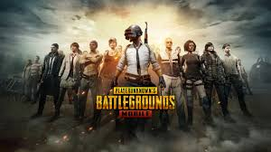
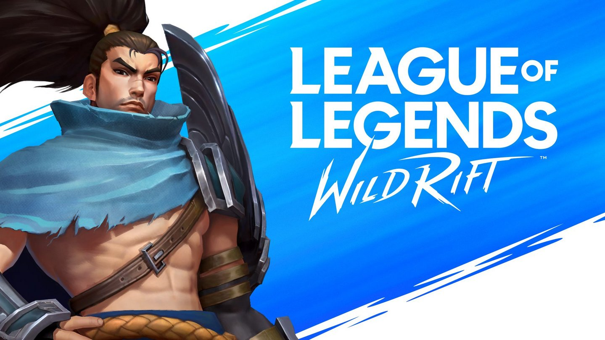
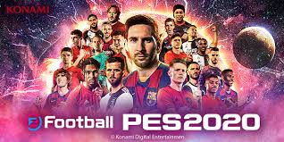

| About Me | Personal Detail | Education | Personal Interest | Hometown | Friends | Game | Gallery |
Mobile Games
PUBG mobile is my favorite games right now. I always plays the game and get some opportunity to compete in competitive scene. I already has join some mini tournament and scrim tier A.
This game being release at October for mobile and need to compete with many other game in same genre. Even, LOL has established for pc, LOL mobile seems to be quite slow to growth. I like to play this game by I hope in further this game will be more influence for mobile gaming.

This game is my first game that i got a chance to join tournament. This game being Malaysian favourite for some peak.
Console Games

I'm also playing game in gaming console and my favourite is Pes 2020. Even Pes 2021 has been launch, I think I will stay with Pes 2020 because for me it still reliable.
One of the games that make you can release the stress. Unfortunately, with mobility and wide community, for now, I will choose mobile games rather than console.
Copyright © 202O Muhammad Fakrul Najzmi Bin Abu Bakar
Recommended Browser Google Chrome Resolution 1366x768
Last Updated 19 DECEMBER 2020
>